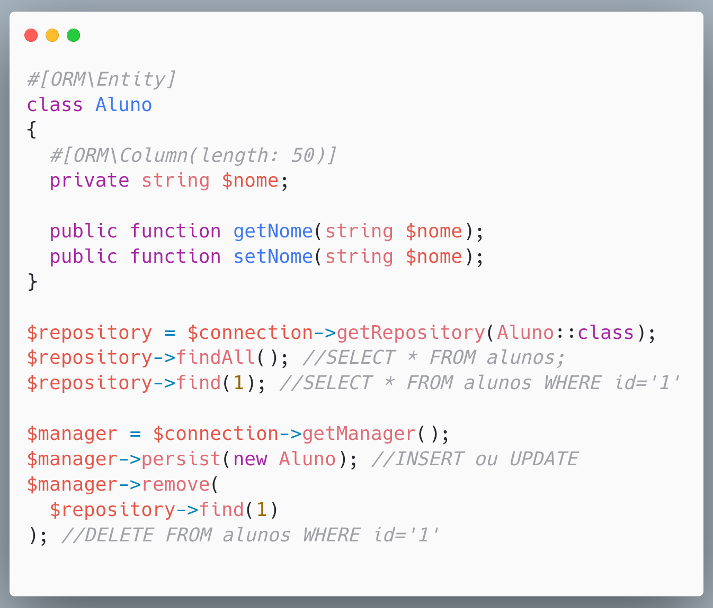
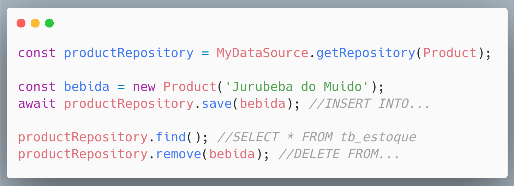

üêòüèúÔ∏èü§†
Database Patterns
(Padrões Arquiteturais)
A questão é:
Fazer nosso código acessar

DEFINIÇÕES
SQL
Falaremos apenas de SQL
Arquitetura
Código
Opções
- O jeito Mundano (PHP/JS das ruas)
- Active Record
- Data Mapper
- Repository Pattern*
DAS RUAS (jeito mundano)
- Esquema do banco - Feito manualmente por fora da aplicação
- Performático* - Não existe nenhuma camada entre o seu código e o banco
O esquema do banco

PHP com MySQLi
PHP com PDO
NodeJS com mysql2
NodeJS com mysql2
ACTIVE RECORD
- Model/Modelo - Uma classe que representa um registro em uma tabela
- Acoplamento Forte - Está diretamente ligado ao esquema
- Fácil de usar - Não é necessário criar os principais métodos
Active Record
Um objeto que envolve uma linha em uma tabela ou exibição de banco de dados, encapsula o acesso ao banco de dados e adiciona lógica de domínio a esses dados.

// buscar todos
Produto::all(); // array de objetos Produto
// criar um novo
$p = new Produto();
$p->nome = 'Ypioca';
$p->quantidade = 10;
$p->valor = 15.99;
$p->save();
let p = new Product(
"Ypioca (sem metanol)"
);
p.valor = 19.89;
p.save();
ELOQUENT (Active Record)
- PHP - O Laravel o traz por padrão
- ORM - Object Relational Mapper
- Bancos - MySQL, PostgreSQL, MS SQL Server, SQLite...
- Atributos/Colunas - São definidos em uma classe de modelo
PHP: Eloquent
JS: Sequelize
JS: Prisma
DATA MAPPER
não confunda com Data Mapping
DATA MAPPER
- Entity/Entidade - Uma classe que apenas modela um registro em uma tabela
- Acoplamento Fraco - Há uma camada a parte para consumir o banco (SoC)
- Menos Fácil de implementar - fornece uma robustez maior, que pode ser entendido como barreira
PHP: DOCTRINE (Data Mapper)
- PHP - Doctrine (O Symfony* o usa por padrão)
- ORM - Object Relational Mapper
- DBAL - Database Abstraction Layer
- Bancos - MySQL, PostgreSQL, MS SQL Server, SQLite...
- Atributos/Colunas - São definidos em uma classe de modelo ou XML/YAML isolado*
#[ORM\Entity)]
class City extends AbstractEntity
{
#[ORM\Id]
#[ORM\Column(type: UuidType::NAME)]
private Uuid $id;
#[ORM\Column(length: 100)]
private readonly string $name;
#[ORM\ManyToOne(targetEntity: State::class)]
#[ORM\JoinColumn(name: 'state_id', referencedColumnName: 'id')]
private readonly State $state;
#[ORM\Column(type: Types::INTEGER, nullable: true)]
private readonly ?int $cityCode;
$repository = $connection->getRepository(
City::class
);
$repository->findAll(); //SELECT * FROM
$repository->find(42); //WHERE id=42
$city = new City('Parnaiba');
$city->setState($piaui);
$connection->getEntityManager()
->persist($city);
PHP: Doctrine
PHP: Doctrine (XML)
PHP: Doctrine
JS: TypeORM*
Jeito mundano
%%{init: {'theme': 'light', 'themeVariables': { 'darkMode': false }}}%%
flowchart LR
codigo(Nosso código) <--> db[(Banco de Dados)]
Active Record
%%{init: {'theme': 'light', 'themeVariables': { 'darkMode': false }}}%%
flowchart LR
codigo(Nosso código) <--> m[Model] <--> db[(Banco de Dados)]
Data Mapper
%%{init: {'theme': 'light', 'themeVariables': { 'darkMode': false }}}%%
flowchart LR
subgraph flow
codigo(Nosso código) <--> D[DataMapper] <--> db[(Banco de Dados)]
end
D <--- |Consulta para saber qual esquema| e(((Entity)))
Repository Pattern
%%{init: {'theme': 'light', 'themeVariables': { 'darkMode': false }}}%%
flowchart LR
subgraph nosso codigo
codigo(Service/Controller/Action) <--> R[Repository]
end
subgraph ORM
R <--> D[DataMapper] <--> db[(Banco de Dados)]
end
D <--- |Consulta para saber qual esquema| e(((Entity)))
codigo <--- |instanciar| e
E é isso
DÚVIDAS?
Referências
@alessandro_feitoza
https://linkedin.com/in/AlessandroFeitoza
slides.feitoza.tec.br